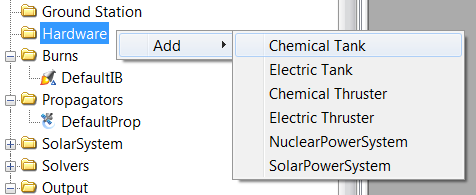
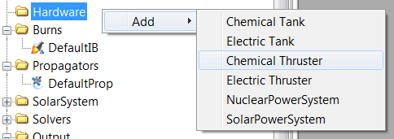
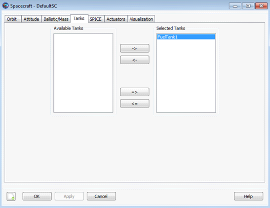

Spacecraft Hardware
Spacecraft Hardware — Add hardware to a spacecraft
Description
The hardware fields allow you to attach pre-configured hardware models to a spacecraft. Current models include ChemicalTank, ChemicalThruster ,ElectricTank, and ElectricThruster. Before you attach a hardware model to a Spacecraft, you must first create the model.
See Also: ChemicalTank, ChemicalThruster,ElectricTank, ElectricThruster
Fields
| Field | Description | ||||||||||||
|---|---|---|---|---|---|---|---|---|---|---|---|---|---|
| Tanks | This field is used to attach
FuelTank(s) to a
Spacecraft. In a script command, an empty
list, e.g.,
| ||||||||||||
| Thrusters | This field is used to attach
Thruster(s) to a
Spacecraft. In a script command, an empty
list, e.g.,
|
GUI
There are two spacecraft hardware items, the FuelTank and the Thruster, that can be attached to a Spacecraft. Here, we describe the method used to create and then attach these items to a Spacecraft. For details on how to configure the FuelTank and Thruster resources, see the help for the individual hardware item. Note the discussion below uses a chemical system as an example but applies equally to electric systems.
As shown below, to add a ChemicalTank to your script, highlight the Hardware resource and then right click to add a ChemicalTank.
|  |
To add a Thruster to your script, highlight the Hardware resource and then right click to add a Thruster.
|  |
Thus far, we have created both a ChemicalTank and a ChemicalThruster. Next, we attach both the ChemicalTank and the ChemicalThruster to a particular Spacecraft. To do this, double click on the desired Spacecraft under the Spacecraft resource to bring up the associated GUI panel. Then click on the Tanks tab to bring up the following GUI display.
 |
Next, select the desired ChemicalTank and use the right arrow button to attach the ChemicalTank to the Spacecraft as shown below. Then click the button.
|  |
Similarly, to attach a ChemicalThruster to a Spacecraft, double click on the desired Spacecraft under the Spacecraft resource and then select the Actuators tab. Then select the desired ChemicalThruster and use the right arrow to attach the ChemicalThruster to the Spacecraft as shown below. Finally, click the button.
 |
Remarks
To use a Thruster to apply a finite burn to a Spacecraft, additional steps are required. For example, when you create the ChemicalThruster resource, you have to associate a ChemicalTank with the ChemicalThruster. For details on this and related matters, see the help for the ChemicalTank, ChemicalThruster, and FiniteBurn resources.
Examples
Create a default Spacecraft. Create ChemicalTank and ChemicalThruster resources and attach them to the Spacecraft.
% Create default Spacecraft, ChemicalTank, and Thruster Resources
Create Spacecraft DefaultSC
Create ChemicalTank FuelTank1
Create ChemicalThruster Thruster1
% Attach ChemicalTank and Thruster to the spacecraft
DefaultSC.Thrusters = {Thruster1}
DefaultSC.Tanks = {FuelTank1}
BeginMissionSequence